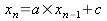

1.Introduction
Je vais vous présenter ici une analyse du keygenme esoquynthe.exe de ++meat. Ce binaire a été codé en asm. Son originalité réside dans trois choses bien distinctes :
- le fait qu'il utilise un moteur pour générer des nombres de façon pseudo-aléatoire nécessaires pour le serial. De ce fait, à chaque lancement du keygenme, le serial change.
- la nécessité de coder un keygen qui doit récupérer des données dans le keygenme lui-même.
- le schéma peu ordinaire de saisie du serial : Il s'agit de choisir à la souris une combinaison de 4 symboles à enchainer dans un certain ordre.
Au lancement du keygenme, on voit la fenêtre suivante apparaître :
Le principe consiste donc, comme je l'ai déjà précisé à cliquer sur 4 symboles situés sur la petite coloquinthe orange. Si les symboles choisis ont été activés de façon convenable, nous avons droit à ceci :
Quelle différence ? Observez bien l'herbe folle placée à côté de la coloquinthe. Le petit motif qui ressemble au départ à un espèce de poisson s'est transformé en une sorte de "7". Ici, pas de message "good boy" ou "bad boy". Pas de string data references ! La victoire ne réside que dans la modification de ce petit motif...
Je vais donc vous expliquer ma démarche de façon complète qui m'a permise de réaliser un keygen qui indique dans quel ordre choisir les motifs pour réussir ce défi. Voici un petit aperçu de la bête :
1.1.Considérations sur les tirages pseudo-aléatoires
Avant tout, il me semble intéressant de profiter de ce keygenme pour jeter un oeil du côté des moteurs de génération de nombres aléatoires. Notamment, il serait intéressant de pouvoir répondre aux questions suivantes : Quelle différence fait-on entre un tirage aléatoire et un tirage pseudo-aléatoire ? Quelles sont les techniques actuelles pour générer des nombres au hasard ? Dans quels cas utiliser de tels tirages ? N'y a-t-il pas des failles connues sur l'utilisation de tels nombres ?
Commençons par une définition vue dans le HoAC :
Exemple : un générateur congruentiel linéaire (introduit en 1948 par D.H.Lehmer) produit une séquence pseudo-aléatoire suivant la récurrence suivante :

La valeur standard conseillée pour a est a = 16807 = 0x41A7. Il s'agit de l'une des valeurs utilisées par esoquynthe.
1.2. Génération du SEED
Il s'agit du problème de taille dans les algorithmes pseudo-aléatoires. Je ne saurais vous rappeler l'épisode malheureux qui conduisit Recca à démollir le schéma de génération des clés de asprotect 1.0, 1.1 et 1.11c à cause d'un SEED mal généré. Amenesia a rédigé un papier sur cette attaque spectaculaire. Elle consiste au final à trouver une clé RSA-1024 en quelques minutes car le SEED utilisé dans le générateur pseudo-aléatoire était produit via la date (time()), TickCount et ThreadID qui donne une information trop importante sur cette GRAINE.
Dans le domaine de la cryptographie, la génération des SEEDS doit être faite avec grand soin.
Il existe deux catégories de générateurs de SEEDs :
- Les générateurs basés sur le hardware qui utilisent le hasard rencontré sur certains phénomènes physiques
- Les générateurs basés sur le software (système de mesure de l'heure - mesure du temps écoulé entre deux saisies clavier ou deux mouvements de souris - contenu de certains buffers - saisies de l'utilisateur - certaines valeurs de l'OS ...)
Une des techniques préconisées pour générer des séquences pseudo-aléatoires est d'appliquer un hash (SHA-1 ou MD5) sur les séquences générées.
1.3. Exemples de générateurs
Pour commencer, voici le code commenté du générateur pseudo-aléatoire de esoquynthe. Il s'agit ici de produire un nombre la plupart du temps compris entre 0 et 3 de façon aléatoire à partir d'un SEED obtenu grâce à la fonction GetTickCount :
00401EF0 PUSH EBP 00401EF1 MOV EBP,ESP 00401EF3 MOV EAX,DWORD PTR DS:[405120] <------------- Récupère le SEED 00401EF8 TEST EAX,80000000 00401EFD JE SHORT esoquynt.00401F04 00401EFF ADD EAX,7FFFFFFF 00401F04 XOR EDX,EDX 00401F06 MOV ECX,1F31D 00401F0B DIV ECX <------------------ Première division (modulo 1F31D) 00401F0D MOV ECX,EAX 00401F0F MOV EAX,41A7 00401F14 MUL EDX <------------------ Première multiplication 00401F16 MOV EDX,ECX 00401F18 MOV ECX,EAX 00401F1A MOV EAX,0B14 00401F1F MUL EDX <------------------ Deuxième multiplication 00401F21 SUB ECX,EAX <------------------ Soustraction finale 00401F23 XOR EDX,EDX 00401F25 MOV EAX,ECX 00401F27 MOV DWORD PTR DS:[405120],ECX 00401F2D DIV DWORD PTR SS:[EBP+8] <------------------ Division par le modulo transmis à la routine (4 dans notre cas) 00401F30 MOV EAX,EDX 00401F32 LEAVE 00401F33 RETN 4
Voilà le code complet que l'on peut obtenir sous masm32 :
.386
.Model Flat ,StdCall
option casemap:none
include \masm32\include\windows.inc
include \masm32\include\kernel32.inc
includelib \masm32\lib\kernel32.lib
.Data
SEED dword 0
.Code
Main:
call GetTickCount
mov SEED, eax
push 125
call RANDOMIZE
push 0
call ExitProcess
; =======================================================
;
; push range
; call RANDOMIZE
; eax = random value choosen between 0 and range
;
; =======================================================
RANDOMIZE PROC
push ebp
mov ebp, esp
mov eax, SEED
test eax, 80000000h
je @F
add eax, 7FFFFFFFh
@@:
xor edx, edx
mov ecx, 1F31Dh
div ecx
mov ecx, eax
mov eax, 41A7h
mul edx
mov edx, ecx
mov ecx, eax
mov eax, 0B14h
mul edx
sub ecx, eax
xor edx, edx
mov eax, ecx
mov SEED, ecx
div dword ptr [ebp+8]
mov eax, edx
leave
ret 4
RANDOMIZE ENDP
End Main
En langage C, le principe reste le même. On initialise le SEED avec srand et on fait un tirage avec rnd() :
#include <cstdlib>
#include <ctime>
#include <iostream>
using namespace std;
int main(){
srand(time(NULL)); // initialise le generateur de maniere aleatoire
for (int i=0 ; i<10;i++ ) {
float f=rand()/(RAND_MAX+1.0);
cout << "Voici un reel compris entre 0 et 1: " << f << endl ;
}
return(0);
}
Au lieu d'utiliser des fonctions windows pour générer le SEED, on peut également utiliser l'instruction RDTSC qui renvoie le nombres de cycles effectués depuis le lancement du programme.
Revenons maintenant à notre keygenme en commençant par une vue d'ensemble de son fonctionnement...